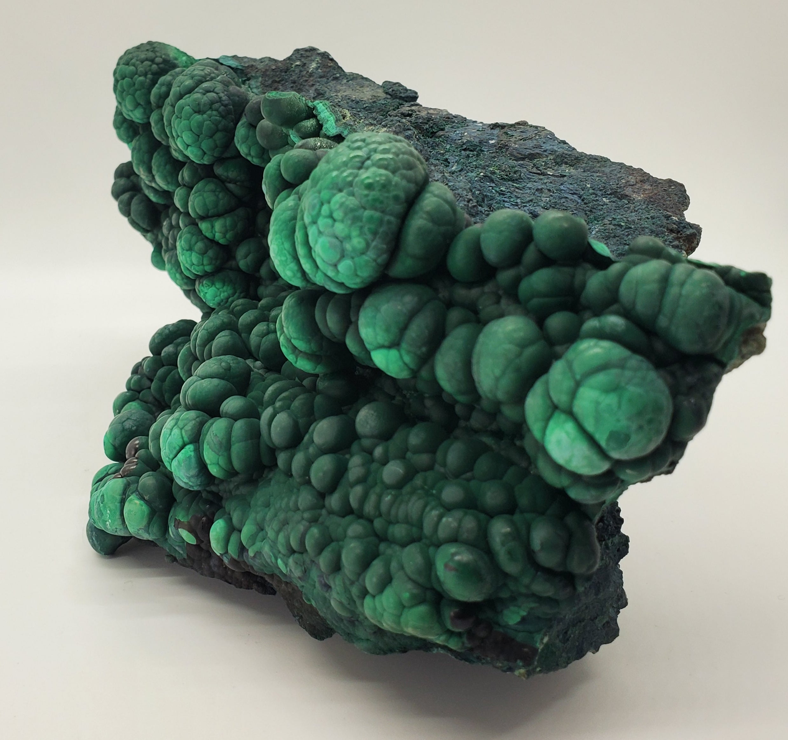
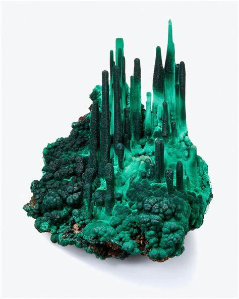
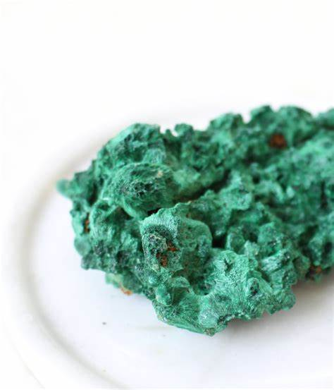
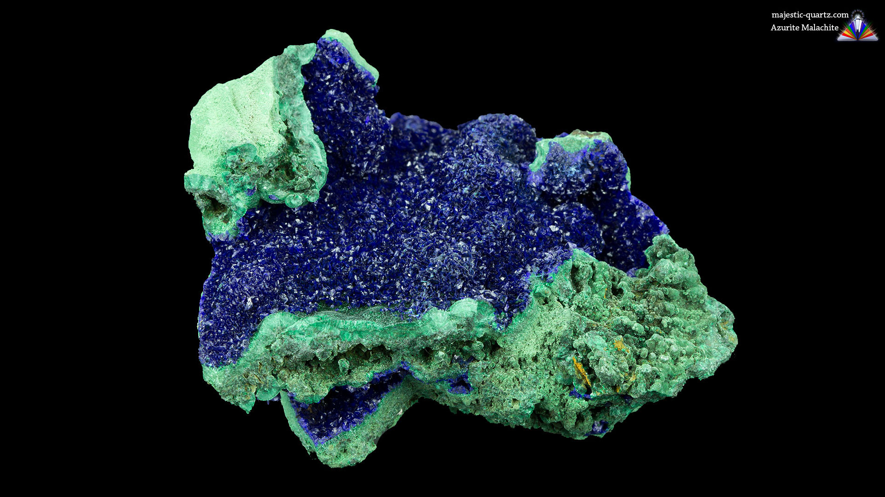
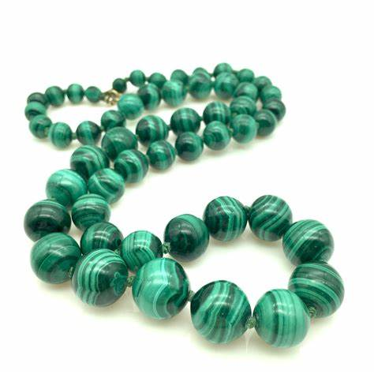
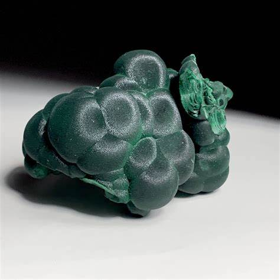
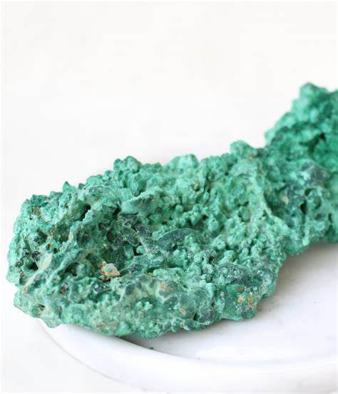
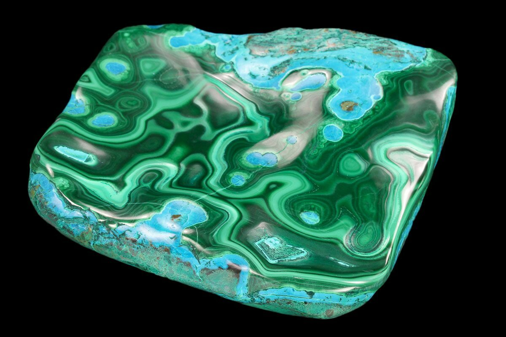

Malachite: The Green Stone of Transformation and Protection
Chemical Formula: Cu₂CO₃(OH)₂ (Copper Carbonate Hydroxide)
Color: Green with banded patterns
Hardness: 3.5 - 4 on the Mohs scale
Crystal System: Monoclinic
Localities: Democratic Republic of Congo, Russia, Australia, USA
Common Uses: Jewelry, Decorative Items, Carvings, Pigment
Malachite is a striking green gemstone known for its vivid color and unique banded patterns. It has been prized for thousands of years both for its beauty and its supposed metaphysical properties. Composed of copper carbonate hydroxide, malachite forms in the oxidized zones of copper deposits, often growing alongside other copper minerals like azurite and chrysocolla.
The name "malachite" comes from the Greek word "malakos," meaning soft, due to the stone's relatively low hardness. Its vibrant green color, reminiscent of lush vegetation, made malachite a favorite among ancient cultures, particularly in Egypt and Rome, where it was used in jewelry, amulets, and as a pigment for cosmetics and paint.
Formation and Types of Malachite
Malachite forms through the weathering and oxidation of copper deposits. Over time, as copper ores are exposed to oxygen, water, and carbon dioxide, malachite crystallizes, often creating beautiful banded formations. These formations can appear in botryoidal (grape-like) clusters, stalactites, or fibrous masses.
There are several types of malachite, distinguished by their appearance and formation:
Botryoidal Malachite
This type forms in rounded, bubble-like masses, often with concentric banding. It is one of the most common and recognizable forms of malachite.
Stalactitic Malachite
Formed in cave-like environments, this type of malachite grows in elongated, cylindrical shapes, often with intricate banding. When sliced, it reveals stunning concentric patterns.
Fibrous Malachite
This variety has a silky, fibrous structure that can display a chatoyant effect (cat's eye), adding to its visual appeal.
Malachite with Azurite
Malachite often forms alongside azurite, a deep blue copper mineral. Specimens that feature both minerals are highly prized for their striking contrast of colors.
Structure and Properties of Malachite
Malachite is a copper carbonate hydroxide with the chemical formula Cu₂CO₃(OH)₂. It belongs to the monoclinic crystal system and typically forms as botryoidal, stalactitic, or fibrous masses.
- Hardness: Malachite has a hardness of 3.5 to 4 on the Mohs scale, making it relatively soft and susceptible to scratches and damage. It should be handled with care, especially in jewelry.
- Color: The most distinctive feature of malachite is its rich green color, which ranges from light to dark green, often with swirling or banded patterns. These patterns are created by variations in the copper content and the crystal structure during formation.
- Luster: Malachite exhibits a vitreous to silky luster when polished, giving it a smooth, reflective surface. In its natural form, malachite can have a dull to earthy luster.
- Inclusions: Malachite often contains inclusions of other minerals such as azurite or chrysocolla, which can add to its aesthetic value. These inclusions can create a marbled or variegated appearance, enhancing the stone's visual appeal.
Uses of Malachite
Jewelry
Malachite is a popular gemstone for jewelry, including rings, necklaces, earrings, and bracelets. Its vibrant green color and unique patterns make it a favorite for statement pieces. However, due to its softness, malachite is often set in protective settings to prevent damage.
Decorative Items
Malachite is used to create a wide range of decorative objects, including vases, boxes, and figurines. It is also used as an inlay in furniture, particularly in luxury items like tabletops and cabinets.
Pigment
In ancient times, malachite was ground into a powder and used as a pigment for cosmetics, paint, and other applications. It was especially popular in Egypt, where it was used as eye makeup (kohl) and in wall paintings.
Metaphysical Uses
Malachite is often used in crystal healing and metaphysical practices. It is believed to offer protection, promote transformation, and facilitate emotional healing. Malachite is also associated with the heart chakra, making it a popular choice for those seeking to enhance love and compassion.
History of Malachite
The history of malachite spans several millennia and includes its use in ancient civilizations:
- Ancient Egypt: Malachite was highly valued in ancient Egypt, where it was mined from the Sinai Peninsula as early as 4000 BC. The Egyptians believed malachite had protective powers and used it in amulets, jewelry, and cosmetics. It was also associated with the goddess Hathor and was used to adorn the walls of tombs and temples.
- Rome and Greece: In ancient Rome and Greece, malachite was used in jewelry and as a protective amulet. The Romans also ground malachite into powder to create green pigment for paintings and frescoes.
- The Russian Empire: Malachite became particularly popular in Russia during the 18th and 19th centuries, where it was used in the decoration of palaces and cathedrals. The famous Malachite Room in the Winter Palace of St. Petersburg is a stunning example of malachite's use in interior design.
- Modern Times: Today, malachite remains a sought-after gemstone, prized for its unique beauty and historical significance. It is used in fine jewelry, decorative arts, and as a material for spiritual and metaphysical practices.
Unusual Varieties of Malachite
While green is the standard color for malachite, there are some unusual varieties and unique specimens:
Velvet Malachite
This variety has a silky, fibrous texture that creates a velvety appearance. When polished, velvet malachite can display a chatoyant effect, similar to that seen in cat's eye stones.
Fibrous Malachite
Characterized by its fibrous structure, this type of malachite can display a shimmering effect when cut and polished. It is often used in cabochons and beads.
Malachite with Chrysocolla
Some malachite specimens are found with chrysocolla, a blue-green copper mineral. The combination of green malachite and blue chrysocolla creates a striking color contrast, making these stones highly desirable.
Enhancement of Malachite
To improve its appearance and durability, malachite may undergo various treatments:
- Stabilization: Due to its softness and susceptibility to damage, malachite is often stabilized with resin or wax. This process helps to strengthen the stone and enhance its polish, making it more suitable for use in jewelry.
- Impregnation: Some malachite specimens are impregnated with colorless epoxy to improve their durability and polish. This treatment is common and generally accepted in the industry, though it should be disclosed to buyers.
- Reconstitution: Low-grade malachite or malachite powder can be reconstituted into blocks using resin or other binding agents. These blocks are then cut and polished like natural malachite, though they are less valuable and should be identified as reconstituted.
Famous Finds and Malachite
The Ural Mountains, Russia
The Ural Mountains in Russia are one of the most famous sources of malachite, producing large quantities of high-quality stone. The Russian royal family favored malachite for decorating palaces, with some of the most impressive examples displayed in the Malachite Room of the Winter Palace.
Democratic Republic of Congo
The Katanga region in the Democratic Republic of Congo is a significant source of malachite, known for producing some of the largest and most vibrant specimens. Congo malachite is often used in carvings and decorative objects.
Australia
Malachite is also found in Australia, particularly in the Burra Burra Copper Mine in South Australia. Australian malachite is known for its rich color and intricate patterns.
Arizona, USA
The Bisbee mine in Arizona is famous for producing malachite with striking patterns, often found alongside azurite. Bisbee malachite is highly valued by collectors and is often used in jewelry and carvings.
Sourcing Locations and Mining
Malachite is sourced from several key locations around the world, each known for producing stones with distinct characteristics:
- Russia: The Ural Mountains are the most famous source of malachite, known for producing large, high-quality specimens. Russian malachite has been used historically in decorative arts and architecture, particularly in the palaces of St. Petersburg.
- Democratic Republic of Congo: The Katanga region in Congo is a major source of malachite, producing some of the finest and most vibrant stones. Congo malachite is used extensively in jewelry, carvings, and decorative objects.
- Australia: Australian malachite is found primarily in the Burra Burra Copper Mine and is known for its rich green color and intricate patterns. It is used in jewelry and decorative arts.
- United States (Arizona): The Bisbee mine in Arizona is particularly famous for producing malachite with striking patterns. The malachite from this region is highly valued and often used in high-quality jewelry and carvings.
Where to Find Malachite in the United States
Malachite is found in several locations in the USA, including Arizona and Utah. The Bisbee mine in Arizona is particularly famous for producing malachite with striking patterns, often used in high-quality jewelry. Use our gemstone and crystals map to locate different citrine locations in the United States.
Malachite Locations Map in the U.S.
Exploration and Mining
The exploration and mining of malachite involves locating suitable deposits and extracting the stone with care:
Exploration
Geological surveys and sampling are conducted to locate malachite deposits, typically in areas with copper ore deposits. Traditional prospecting methods, such as surface exploration and test drilling, are used to identify potential mining sites.
Mining Methods
Malachite is usually mined as a byproduct of copper mining. Open-pit and underground mining techniques are employed depending on the depth of the deposit. Careful extraction is necessary to preserve the stone's natural patterns and minimize damage.
Processing
After extraction, malachite is cleaned, sorted, and graded based on color, pattern, and quality. The stone is then cut and polished for use in jewelry, decorative items, or as a material for carvings.
Identifying Authentic Malachite
Identifying authentic malachite involves examining several key characteristics:
- Color and Pattern: Authentic malachite has a distinctive green color with banded patterns ranging from light to dark green. The bands should appear natural, with smooth transitions between shades.
- Inclusions: Malachite may contain inclusions of other minerals such as azurite or chrysocolla. These inclusions add to the stone's uniqueness and value but should be clearly defined and not overly dominant.
- Testing Methods: Common tests for authenticity include checking for dye (by rubbing the stone with acetone) and examining the stone's structure under magnification. Genuine malachite should have a natural pattern with no evidence of artificial enhancement.
- Certification: Although malachite is less commonly certified than other gemstones, stones from reputable sources or dealers may come with a certificate of authenticity, especially for high-quality specimens.
Buy & Sell Authentic Malachite Here
Cutting and Polishing Malachite
Cutting and polishing malachite is an art that enhances the stone's natural beauty:
- The Cutting Process: Malachite is typically cut into cabochons, beads, or inlays as these shapes best showcase the stone's banded patterns. The stone is carefully cut to highlight its natural beauty while minimizing the visibility of any inclusions or flaws.
- Polishing: After cutting, malachite is polished to a high sheen. The polishing process involves using fine abrasives to smooth the surface and enhance the stone's luster. Polished malachite has a vitreous to silky sheen that highlights its intricate patterns.
- Carving: Due to its softness, malachite is also used for carving intricate designs, such as figurines, small sculptures, and decorative objects. Skilled artisans can create detailed carvings that highlight the stone's unique banding.
Malachite Market and Trade
The market for malachite is influenced by several factors, including quality, origin, and demand:
- Value Determinants: The value of malachite is determined by its color, pattern, and overall quality. Stones with deep, consistent green color and well-defined banding are the most valuable.
- Global Trade: The Democratic Republic of Congo is the leading producer of malachite, followed by Russia and Australia. The global trade of malachite is driven by demand from jewelers, artisans, and collectors who value the stone for its unique patterns and historical significance.
- Market Trends: Malachite continues to be popular in jewelry and decorative arts. The demand for ethically sourced stones is increasing, particularly as consumers become more aware of the conditions in which malachite is mined. Artisanal and small-scale mining practices are common, especially in the Congo, where much of the stone is extracted using traditional methods.
Buy & Sell Authentic Malachite Here
Caring for Malachite
Malachite requires proper care to maintain its beauty and prevent damage:
- Cleaning: Clean malachite with warm soapy water and a soft cloth. Avoid ultrasonic cleaners and harsh chemicals, as these can damage the stone's surface or alter its color. Due to the stone's porosity, it should not be soaked in water.
- Storage: Store malachite separately from harder gemstones to prevent scratches. Keep it in a soft pouch or lined jewelry box to protect it from dust and abrasion.
- Handling: Malachite is relatively soft and can be prone to scratching and chipping. Handle it with care, especially when wearing or cleaning jewelry. Avoid exposing malachite to extreme temperatures or direct sunlight, as this can cause the color to fade.
- Repolishing: Over time, malachite may lose its luster. Professional repolishing can restore the stone's shine and enhance its appearance.
Metaphysical Properties of Malachite
Malachite has been attributed with various metaphysical properties throughout history:
- Transformation and Protection: Malachite is often associated with transformation and protection. It is believed to absorb negative energies and protect the wearer from harm. The stone is also thought to facilitate personal growth and positive change.
- Emotional Healing: Malachite is said to balance emotions, alleviate stress, and promote a sense of inner peace. It is often used in crystal healing practices to encourage self-awareness and self-expression.
- Spiritual Growth: The stone is considered a powerful tool for spiritual growth and meditation. It is said to help the wearer connect with their higher self, access spiritual insight, and deepen their understanding of the universe.
- Heart Chakra: Malachite is associated with the heart chakra, making it a popular choice for those seeking to enhance love, compassion, and emotional balance. It is believed to open the heart to unconditional love and strengthen relationships.
See Also
- Related Crystals and Gemstones: Aquamarine, Citrine, Amethyst
- Related Topics: Exploring the Differences: Malachite vs Emerald Showdown